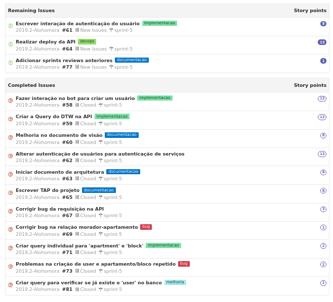
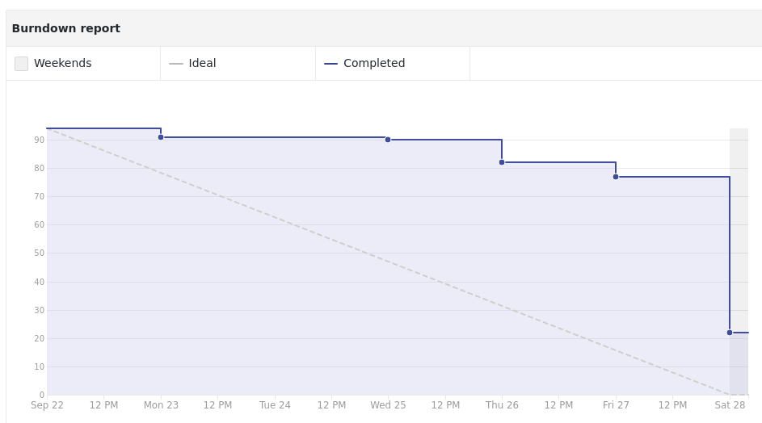

Sprint 5
Contexto
Em resumo essa sprint é a preparação par a primeira release do projeto. Estamos buscando terminar as interações necessárias no telegram para termos as funcionalidades em uma possível demo do projeto.
Tarefas

Burndown

Review
WIP
Notas do Scrum master.
As documentações foram inicadas porém com grandes ressalvas, estão longe de serem consideradas as versões finais para entrega; porém ja é alguma coisa. Tivemos várias problemas no foco da implementação na integração do DTW com a API.
É bem complicado conter a euforia do time quanto ao projeto e isso acarreta horas e horas de conjecturas desnecessárias, contudo conseguimos integrar o DTW na API e isso se deve ao comprometimento do time com o projeto.
As issues que ficaram abertas (dívida tecnica) estão finalizadas porém faltam alguns detalhes como configurar variáveis de ambientes e outros. Assim acredito que não estamos levando peso para próxima sprint.